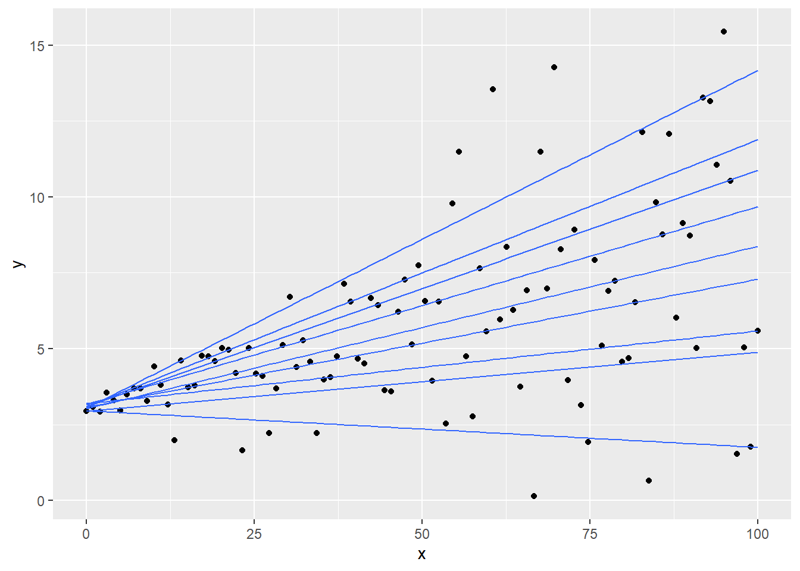

6.5 Spline Regression
This chapter is based on CMU stat
Definition: a k-th order spline is a piecewise polynomial function of degree k, that is continuous and has continuous derivatives of orders 1,…, k -1, at its knot points
Equivalently, a function f is a k-th order spline with knot points at \(t_1 < ...< t_m\) if
- f is a polynomial of degree k on each of the intervals \((-\infty, t_1], [t_1,t_2],...,[t_m, \infty)\)
- \(f^{(j)}\), the j-th derivative of f, is continuous at \(t_1,...,t_m\) for each j = 0,1,…,k-1
A common case is when k = 3, called cubic splines. (piecewise cubic functions are continuous, and also continuous at its first and second derivatives)
To parameterize the set of splines, we could use truncated power basis, defined as
\[ g_1(x) = 1 \\ g_2(x) = x \\ ... \\ g_{k+1}(x) = x^k \\ g_{k+1+j}(x) = (x-t_j)^k_+ \]
where j = 1,…,m and \(x_+\) = max{x,0}
However, now software typically use B-spline basis.
6.5.1 Regression Splines
To estimate the regression function \(r(X) = E(Y|X =x)\), we can fit a k-th order spline with knots at some prespecified locations \(t_1,...,t_m\)
Regression splines are functions of
\[ \sum_{j=1}^{m+k+1} \beta_jg_j \]
where
\(\beta_1,..\beta_{m+k+1}\) are coefficients \(g_1,...,g_{m+k+1}\) are the truncated power basis functions for k-th order splines over the knots \(t_1,...,t_m\)
To estimate the coefficients
\[ \sum_{i=1}^{n} (y_i - \sum_{j=1}^{m} \beta_j g_j (x_i))^2 \]
then regression spline is
\[ \hat{r}(x) = \sum_{j=1}^{m+k+1} \hat{\beta}_j g_j (x) \]
If we define the basis matrix \(G \in R^{n \times (m+k+1)}\) by \[ G_{ij} = g_j(x_i) \] where \(i = 1,..,n\) , \(j = 1,..,m+k+1\)
Then,
\[ \sum_{i=1}^{n} (y_i - \sum_{j=1}^{m} \beta_j g_j (x_i))^2 = ||y - G \beta||_2^2 \]
and the regression spline estimate at x is
\[ \hat{r} (x) = g(x)^T \hat{\beta}= g(x)^T(G^TG)^{-1}G^Ty \]
6.5.2 Natural splines
A natural spline of order k, with knots at \(t_1 <...< t_m\), is a piecewise polynomial function f such that
- f is polynomial of degree k on each of \([t_1,t_2],...,[t_{m-1},t_m]\)
- f is a polynomial of degree \((k-1)/2\) on \((-\infty,t_1]\) and \([t_m,\infty)\)
- f is continuous and has continuous derivatives of orders 1,.,,, k -1 at its knots \(t_1,..,t_m\)
Note
natural splines are only defined for odd orders k.
6.5.3 Smoothing spliness
These estimators use a regularized regression over the natural spline basis: placing knots at all points \(x_1,...x_n\)
For the case of cubic splines, the coefficients are the minimization of
\[ ||y - G\beta||^2_2 + \lambda \beta^T \Omega \beta \]
where \(\Omega \in R^{n \times n}\) is the penalty matrix
\[ \Omega_{ij} = \int g''_i(t) g''_j(t) dt, \]
and i,j = 1,..,n
and \(\lambda \beta^T \Omega \beta\) is the regularization term used to shrink the components of \(\hat{\beta}\) towards 0. \(\lambda > 0\) is the tuning parameter (or smoothing parameter). Higher value of \(\lambda\), faster shrinkage (shrinking away basis functions)
Note
smoothing splines have similar fits as kernel regression.
| Smoothing splines | kernel regression | |
|---|---|---|
| tuning parameter | smoothing parameter \(\lambda\) | bandwidth h |
6.5.4 Application
library(tidyverse)
library(caret)
theme_set(theme_classic())
# Load the data
data("Boston", package = "MASS")
# Split the data into training and test set
set.seed(123)
training.samples <- Boston$medv %>%
createDataPartition(p = 0.8, list = FALSE)
train.data <- Boston[training.samples, ]
test.data <- Boston[-training.samples, ]
knots <- quantile(train.data$lstat, p = c(0.25, 0.5, 0.75)) # we use 3 knots at 25,50,and 75 quantile.
library(splines)
# Build the model
knots <- quantile(train.data$lstat, p = c(0.25, 0.5, 0.75))
model <- lm (medv ~ bs(lstat, knots = knots), data = train.data)
# Make predictions
predictions <- model %>% predict(test.data)
# Model performance
data.frame(
RMSE = RMSE(predictions, test.data$medv),
R2 = R2(predictions, test.data$medv)
)## RMSE R2
## 1 5.317372 0.6786367ggplot(train.data, aes(lstat, medv) ) +
geom_point() +
stat_smooth(method = lm, formula = y ~ splines::bs(x, df = 3))
attach(train.data)
#fitting smoothing splines using smooth.spline(X,Y,df=...)
fit1<-smooth.spline(train.data$lstat,train.data$medv,df=3 ) # 3 degrees of freedom
#Plotting both cubic and Smoothing Splines
plot(train.data$lstat,train.data$medv,col="grey")
lstat.grid = seq(from = range(lstat)[1], to = range(lstat)[2])
points(lstat.grid,predict(model,newdata = list(lstat=lstat.grid)),col="darkgreen",lwd=2,type="l")
#adding cutpoints
abline(v=c(10,20,30),lty=2,col="darkgreen")
lines(fit1,col="red",lwd=2)
legend("topright",c("Smoothing Spline with 3 df","Cubic Spline"),col=c("red","darkgreen"),lwd=2)